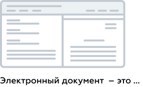

Электронный документ. Основные понятия
▪В разделе Документы хранятся электронные документы, зарегистрированные в Riverdoc.
▪Электронный документ = Карточка документа* (свойства документа) + Файл документа.

▪Карточка документа является обязательной регистрационной формой документа, в которой содержится сводная информация о документе.
▪Файл можно добавить в документ в любой момент времени или файл может отсутствовать вовсе.
Как организован раздел "Документы"
Для удобства работы с электронным архивом в разделе Документы выделены следующие подразделы:
•Недавние – список документов, с которыми текущий пользователь работал в последнее время. Содержимое этого подраздела отображается при загрузке раздела Документы.
•Избранное – документы и папки, которые пользователь добавил в категорию избранных.
•Документы – электронный архив, в котором хранятся электронные документы в структурированном виде. Из этого подраздела доступны все операции и действия с документами. Загрузка содержимого может занимать некоторое
Пример листинга
/* Project settings */
var hmAnimate = true;
var hmPopupSticky = true;
var hmImageLightbox = true;
var hmVideoLightbox = true;
var hmLightboxConstrained = true;
var hmForceRedirect = false;
var hmTocSingleClick = true;
var autocollapse = false;
var gaaccount = "";
var initialtocstate = "collapsed";
Пример подката
В списке документов в столбце Дата создания для документов выводится дата и время создания последней версии документа. Дата регистрации документа в системе совпадает с датой создания первой версии документа (карточка документа → вкладка Версии → столбец Дата версии). |
Пример графики в разных форматах
svg

Это подпись к svg-картинке
png
{kind=link}
Это подпись к png-картинке (кстати, это тоггл)
Пример хотспота
Пример сниппета
 Содержание этой статьи может немного расходиться с текущей реализацией Riverdoc. Если возникнут вопросы, пожалуйста, обращайтесь по электронной почте guides@ntik.ru. Этот сниппет добавляю, когда функцонал вот-вот доделают, а описывала по протопипу.
Содержание этой статьи может немного расходиться с текущей реализацией Riverdoc. Если возникнут вопросы, пожалуйста, обращайтесь по электронной почте guides@ntik.ru. Этот сниппет добавляю, когда функцонал вот-вот доделают, а описывала по протопипу.
Пример таблицы
1 |
2 |
3 |
4 |
5 |
6 |
1.1 2.2 3.3 4.4 |
88888888888888888888 88888888888888888888888888888888 88888888888888888888888888888888888 888888888888888888888888888888888888 8888888888888888888888888888888888 888888 |
•999 •999 •999 •999 |
См. также:
Инструкция. Как создать документ
Как открыть карточку документа